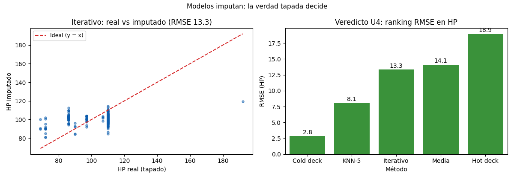

Unidad 4 · Datos faltantes e imputación · Lección 0018
Imputación con modelos y veredicto U4
Win de hoy: imputar con regresiones encadenadas
(IterativeImputer: KM 34.766→23.978, HP 14,1→13,3) y cerrar la unidad con el ranking
completo contra la verdad tapada.
1 · La idea: predecir el hueco con el resto
Si KM se predice bien con edad y precio (U6), ¿por qué rellenarlo con la media? La
imputación iterativa
(IterativeImputer, prima de
MICE) hace rondas: predice KM con el resto, luego
HP con el resto más el KM ya rellenado, y repite hasta que se estabiliza. Cada hueco sale de
un modelo, no de un número fijo.
from sklearn.experimental import enable_iterative_imputer
from sklearn.impute import IterativeImputer
imp = IterativeImputer(random_state=42).fit_transform(X) # X: KM,HP,Edad,Peso,Price2 · Resultados: KM festeja, HP apenas mejora
- KM: 34.766 → 23.978 (−31 %). Edad y precio explican mucho al kilometraje: el modelo aprovecha.
- HP: 14,1 → 13,3 (−6 %). Mejora pobre… porque sus aliadas (el motor del texto) no están en la matriz numérica. Cold deck (0017) ganaba con 2,8 justamente por usarlas.
3 · Veredicto U4: el ranking en HP
| Método | RMSE | Idea |
|---|---|---|
| Cold deck (tabla motor) | 2,8 | Fuente externa casi perfecta |
| KNN-5 | 8,1 | Promedia 5 vecinos parecidos |
| Iterativo | 13,3 | Regresiones encadenadas |
| Media | 14,1 | Un número para todos |
| Hot deck | 18,9 | Donante real (preserva forma) |
Protocolo de cierre: conocer el mecanismo (0015), imputar según el caso (0016–0018), medir contra verdad conocida cuando se pueda, y reportar el método: un dataset imputado sin documentación es una trampa. Bonus: la imputación múltiple genera varias versiones y promedia: mide cuánto duele no saber.
4 · Figura: real vs imputado y ranking

Regenerar la figura (mismo resultado versionado en assets/img/toyota/):
python scripts/make_figures.py --only imputacion-con-modelos5 · Quiz (auto-chequeo inmediato)
6 · Fuente primaria y cierre
Para profundizar (1 fuente):
Documentación de scikit-learn — IterativeImputer e imputación multivariada
(scikit-learn.org, también en
RESOURCES.md del curso).
¿Algo no quedó claro? Preguntame al agente: cómo armar tu matriz de imputación, qué columnas sumarían para HP, o cuándo usar imputación múltiple. Esa pregunta vale más que releer.